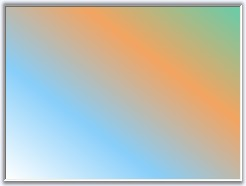

GradientPanel is a panel-derived control that acts as a container for other controls. It is used to group a collection of controls and it has the ability to have a custom background gradient using an array of colors.

Figure 387: GradientPanel Control
 Features Overview
Features Overview